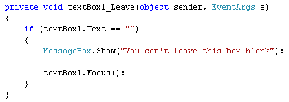
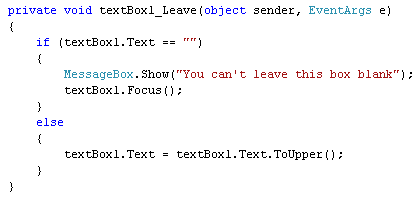

The Leave Event in C# .NET
A very useful event you can use for text boxes is the Leave event. It allows you to validate a text box when a user tries to leave it. You can check, for example, if the text box is blank. If it needs to be filled in, you can keep them there. Let's try that.
Add two text boxes to your form. Locate the TabIndex property for textbox1 and set it to 0. For textbox2, set the TabIndex property to 1.
The TabIndex property refers to which control will be selected when the Tab key is pressed. On a form that a user has to fill in, you want the cursor to jump to the next textbox. You don't want the cursor jumping down from textbox1 to textbox8 - it has to be a nice sequential order. The TabIndex allows you to set the Tab order for all the controls on your form.
With TextBox1 selected, click the lightning bolt in the properties area to see a list of events for textboxes. You should see this:

Double click the Leave event to bring up its code stub. Now enter the following code:

The code just checks for a blank text box. But it makes the check when the user attempts to leave the text box and move on to the next one. Notice how the user is brought back to the text box:
textBox1.Focus( );
The Focus method can be used to force a control to be selected. For text boxes, this means that the cursor will be flashing inside of it.
You can also do things like converting text to upper or proper case when the users Tabs away from a text box. Here's some code that converts to uppercase:

In the next part, we'll take a look at Events for ListBoxes and ComboBoxes.